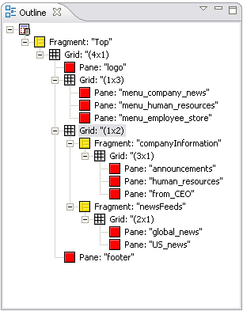
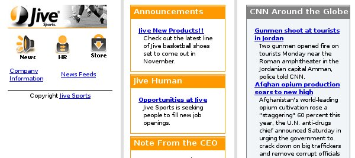

Compared to PCs, PDAs and phones have limited display capability, so you often need to modify the content sent to them. Text can be very difficult to read if users have to scroll it both horizontally and vertically, for example.
MCS allows you to split your content into a series of pages with links to provide navigation between them. Each individual page generated from a larger layout is called a fragment.
The first step in creating a fragment set is to create a root fragment for the whole layout. This fragment will contain the links to the other fragments. The other fragments each contain a link back to the root fragment. So users can select and traverse the links just as they would for any other web link.
The figure shows the outline view of a layout, which is divided into three fragments, 'top', 'companyinformation' and 'newsfeeds'. In turn the fragments contain named pages for sections such as 'human_resources'
When MCS delivers this layout to a small device, it will be displayed as the set of pages, starting with the content in the root fragment and its links.

MCS binds the fragment panes in the layout to the XDIME markup using the id attribute of the div element, and the theme for that page. The example shows part of the 'announcements' page
<div class="company_item" id="announcements">
<h3 class="company_header">Announcements</h3>
<dl class="sec_menu">
<dt>
<a href="products.xdime" class="title">Jive New Products!!</a>
</dt>
<dd>Check out the latest line of Jive basketball shoes set to
come out in November.</dd>
</dl>
</div>
The fragmentation will look like this on a Smartphone.

Related topics
Canvas layouts and panes
Dissecting panes
Replicas